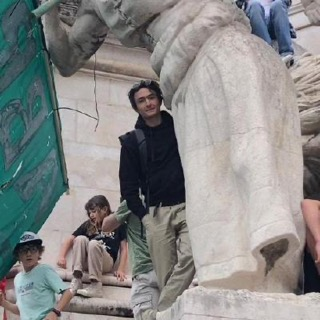
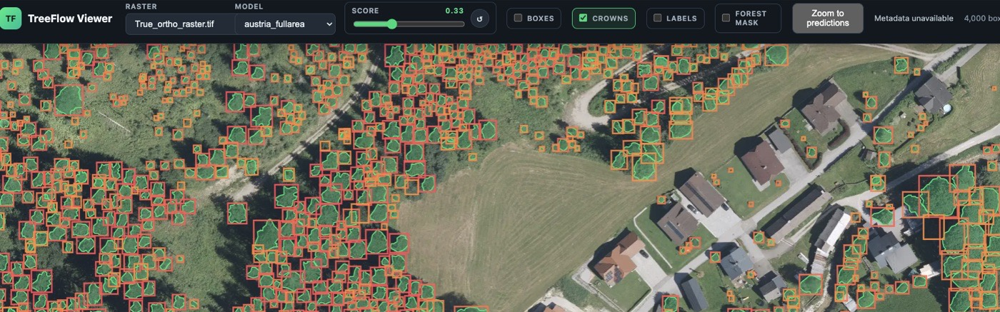

Data Science MSc · ETH ZürichHi, I'm Felix.
I am an aspiring deep learning researcher, data scientist and backend engineer, interested in ecological topics and climate change impact mitigation. Currently doing my Master's in Data Science at ETH, and from October at IBM Research Zürich, working on HPC database systems.
Research interests
Foundation models and self-supervised learning for earth observation, uncertainty estimation, and machine learning that interacts with physical systems (physics-inspired ML).
Now
Research Intern
HPC database systems.
UN Student Project Team

Teaching neural networks to detect trees
For a year I was a research assistant in the Forest Resource Management group (FORM) at ETH Zürich, working on tree crown detection from aerial imagery: what matters in the labels, how to bring state-of-the-art detection to practitioners, and pretraining a foundation model on Swiss aerial imagery.
Before
Hack4Good
Multi-agent LLM system for the OECD STIP Compass, linking policy data with research papers from OpenAlex. → project
Internship
Helped build Turri.CR, an e-commerce platform for small local producers from Turrialba (coffee, chocolate, dairy) with fair income for the producers. Part of it: the Google ADK Hackathon, where I built a multi-agent system (ADK, Gemini) connecting producers with consumers through recommendation and business-insight agents. → project
Research Assistant
With Prof. Matthias Liess: ecotoxicology models (Stress Addition Model) and an LLM pipeline (Gemini) for a meta-analysis across 6,000+ papers; co-author of the resulting publication. → project
Working Student, ML Ops
LLM training and deployment, backend and database management.
Bremen Big Data Challenge
Forecasting underwater time series off Helgoland. → project
Bachelor Thesis & Working Student
Deep learning to invert physical simulations and estimate their uncertainty (surrogate models, magnetostatics).
Research Intern
Machine learning on street view images (RISE scholarship).
B.Sc. Cognitive Science
With an Erasmus semester at FCT Universidade Nova de Lisboa.